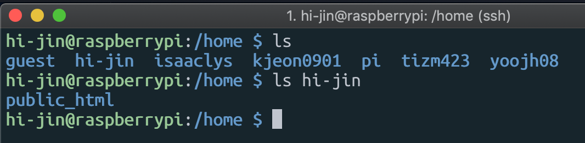
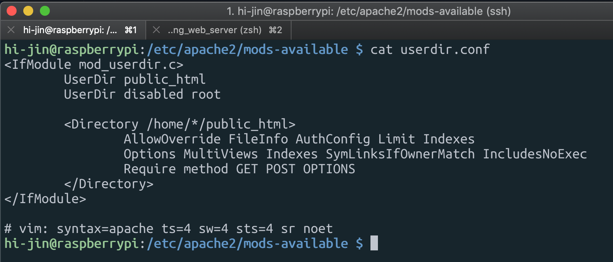
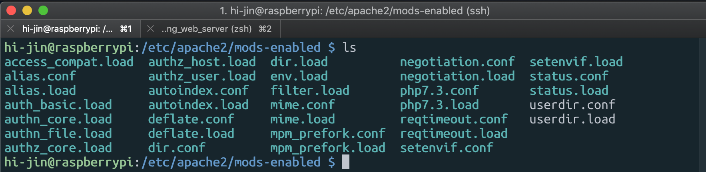
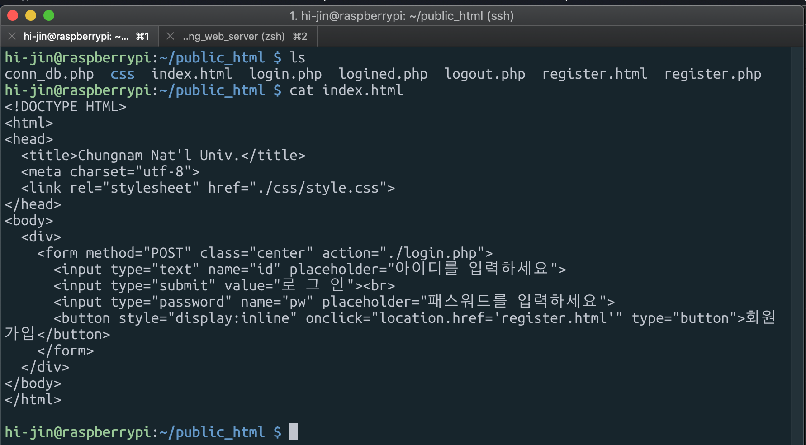
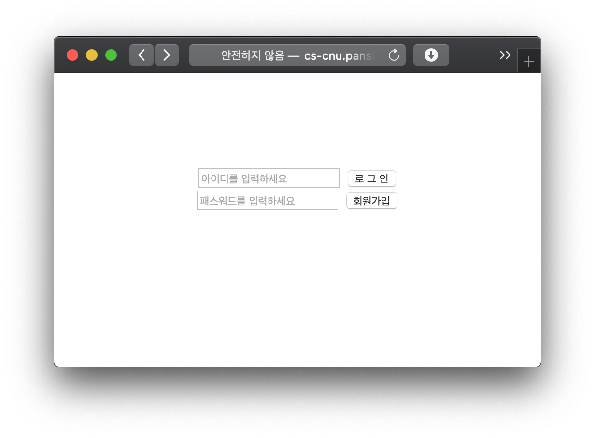
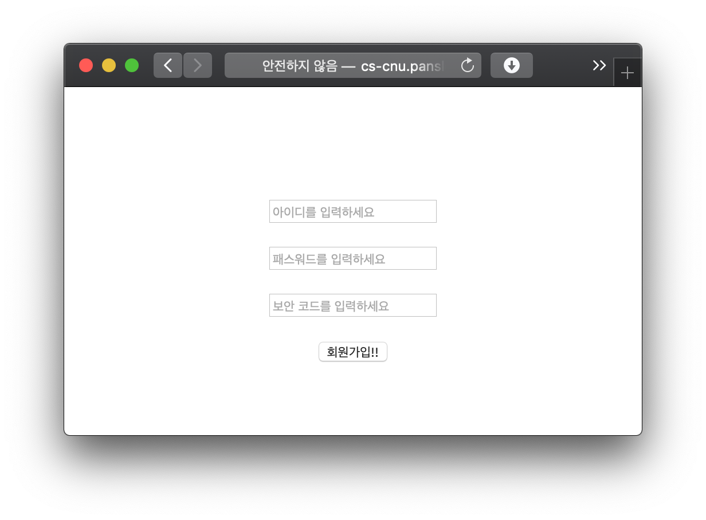
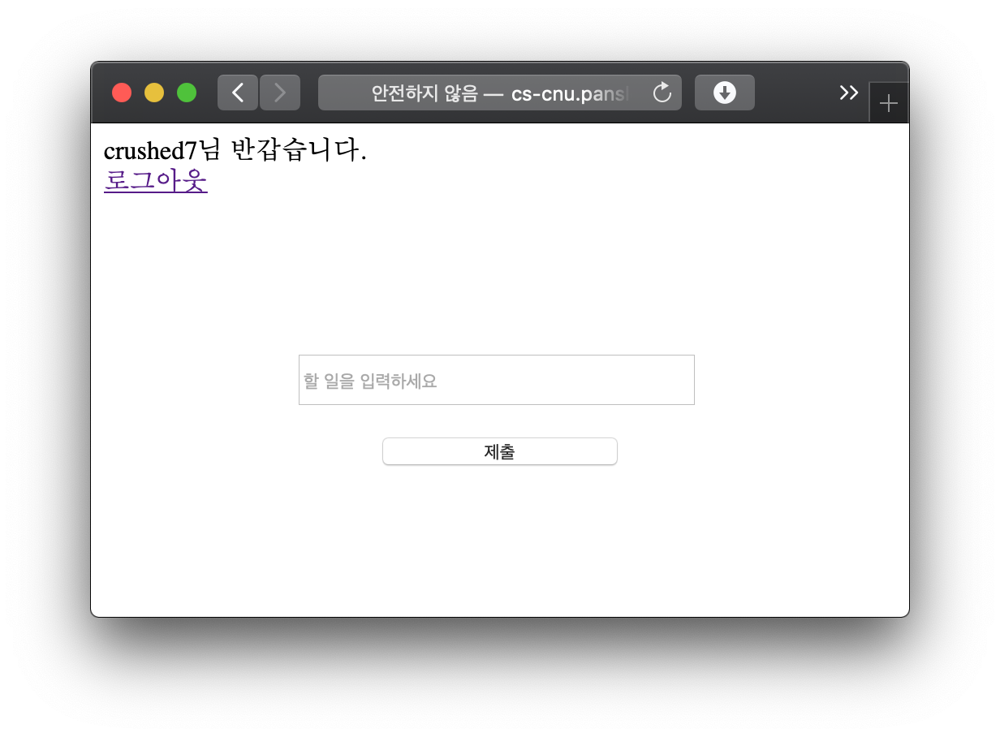
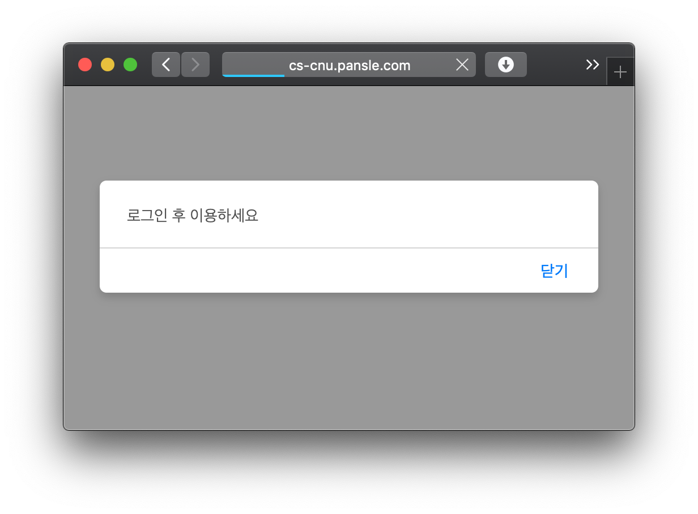

Web server
Setting web server!
Development motive
서버를 가지고 할 수 있는 것 중 하나가 웹 서버 운영이라고 생각하여 시작하게 되었다.
things that I needed for server operation
Apache HTTP Server // 컴퓨터(서버)를 웹서버로 만들어준다. (HTTP 요청 처리)
PHP // 웹 프로그래밍 언어, 서버에서 실행되는 서버사이드 언어, db와 연동
MariaDB // MySQL과 거의 같은데 훨씬 빠르고 가벼운 데이터베이스이다.
(apt install 명령어로 설치하였다.)
mkdir public_html
개인별 웹 디렉토리를 만들어주기 위해 각종 설정을 하고 mkdir 명령어로 public_html 폴더를 만들었다.
아래에 보이는 사용자들 모두 public_html이라는 폴더를 가지고 있고, 그 폴더에 각자의 웹을 만들 수 있다!
(http://서버주소/~유저명 으로 접근가능)

개별 웹 디렉토리를 활성화 하기 위해, userDir이라는 모듈을 활성화 시켜줘야 한다. 그러기 위해서..
cd명령어로 /etc/apache2/mods-available 로 이동한다.
이름에서 알 수 있듯, 사용가능한 모듈들이 모여있는 폴더인데, 그 폴더에서 userdir.conf를 찾아 아래처럼 수정했다.

그리고, 이 모듈을 활성화 하기 위해, userdir.conf와 userdir.load를 cp명령어로 mods-enabled에 복사해주었다.

my Web page!
간단한 회원가입, 로그인, 로그아웃 기능을 구현해보았다.

아래는 접속했을 떄의 화면이다. (할 일 제출은 아직 구현 안했다.)
로그인을 하지 않은 채로 로그인 후의 페이지로 이동하려고 하면 세션을 검사하여 접근을 거부하도록 했다.
세션 구현을 제대로 했는지는 잘 모르겠다..




느낀점
이번에는 로그인, 회원가입을 구현했다. 이제 뭘 더 해야할지 더 생각해봐야 할 것 같다.
나름 보안 동아리 부원이니까 취약점을 찾아보고 보완해볼지,
아니면 화면을 꾸밀지 생각중이다. 로그인 화면을 이렇게 만들어 놓으면, 아무도 가입하고 싶어하지 않을 것 같기 때문이다.